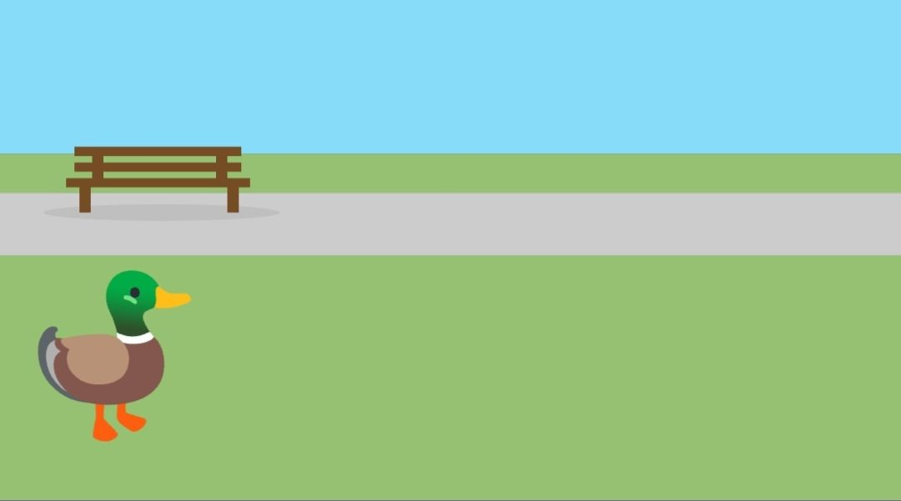
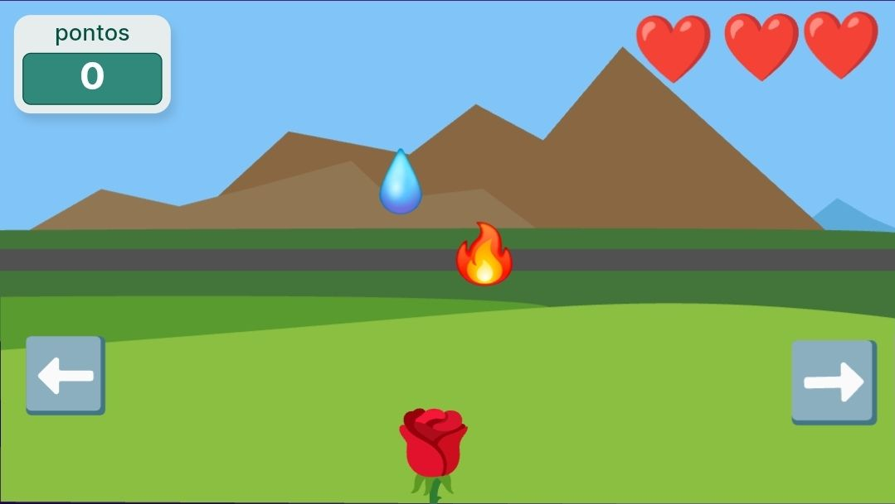
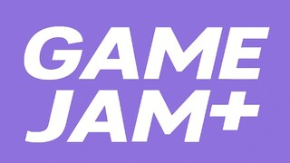

Este material foi desenvolvido para professores que desejam introduzir conceitos de programação de forma acessível, fácil e divertida. Aqui você encontrará uma coletânea de projetos desenvolvidos com o Octostudio um software gratuito de celular que utiliza programação em bloco.
Cada capítulo apresenta um jogo diferente, com objetivos variados, pensados para explorar os principais fundamentos da programação visual, como lógica, eventos, repetições e condições.
O material foi estruturado para ser aplicado em sala de aula, tanto como componente curricular quanto como oficina ou projeto interdisciplinar. Os jogos podem ser baixados, adaptados e usados como ponto de partida para criações dos próprios alunos, chegando em uma atividade final de Game Jam que incentiva a autonomia e criatividade dos alunos.
Projeto 1 - Pato (Introdutório)

Neste projeto introdutório, os alunos vão conhecer a interface do Octostudio e experimentar seus primeiros blocos de programação, desenvolvendo um pato animado se movimenta, pula e emite sons, tudo com poucos comandos.
Ler mais
Projeto 2 - Gambá Saltitante
Neste projeto, vamos desenvolver um jogo similar ao que é mostrado no navegador Chrome quando o dispositivo está desconectado, teremos um gambá que deve pular os cactos que vem em sua direção.
Ler mais
Projeto 3 - Resgate do ET

Neste projeto, vamos desenvolver um jogo que movimenta o ator com a inclinação do celular, sendo este uma nave que se move pelo espaço, resgatando os Ets para aumentar sua pontuação e desviando de meteoros.
Ler mais
Projeto 4 - Pet Digital

Neste projeto, vamos desenvolver um jogo em que o ator se movimenta quando um dos outros atores é clicado, fazendo o ator ir até o outro ator e depois voltar ao ponto original. O jogador tem que manter a felicidade do ator principal, o Coelho, para que o jogo não termine.
Ler mais
Projeto 5 - Flor em Ação

Neste projeto, vamos desenvolver um jogo em que o ator principal, a Flor, se movimenta para esquerda e para direita com ajuda de botões, este ator deve esquivar do fogo para não perder vida e coletar a água para marcar pontos.
Ler mais
Projeto 6 - Flappy Bird
Neste projeto, vamos desenvolver um jogo em que o ator principal, o Pássaro, esta sempre “caindo” e se movimenta para cima, como se estivesse voando, quando tocamos na tela, o ator deve esquivar das nuvens e coletar as maçãs para marcar pontos.
Ler mais
Projeto 7 - Fruit Ninja (...)

Neste projeto, vamos desenvolver um jogo inspirado no clássico Fruit Ninja, em que, utilizando toques na tela, as frutas, que aparecem aleatoriamente, são cortadas, enquanto tentamos evitar cortar os balões.
Ler mais
Projeto 8 - Ping Pong (...)

Neste projeto, vamos desenvolver um jogo de ping pong em que o objetivo é não deixar a bolinha cair, obtendo o máximo de pontos movimentando a plataforma, para tentar controlar a bola com colisões e rebotes.
Ler mais
Projeto 9 - Mire e Atire (...)

Neste projeto, vamos desenvolver um jogo em que o objetivo é atirar em um fogo móvel com um pistola de água, arrumando sua inclinação com as setas e completando as fases com o mínimo de tiros.
Ler mais
Projeto 10 - Escape Room (...)

Neste projeto, vamos desenvolver um pequeno jogo de fuga, no estilo escape room, em que devemos tentar interagir com os objetos da sala para encontrar uma maneira de sair e completar o jogo.
Ler mais
Projeto 11 - Aventura na Masmorra (...)

Neste projeto, vamos desenvolver um jogo em que o personagem principal Herói explora uma masmorra, enfrentando diferentes obstáculos e inimigos como fogo, raio, zumbis e um Chefão final para vencer o jogo.
Ler mais
Projeto 12 - Game Jam

Nesse projeto final do curso temos como objetivo fazer os alunos colocarem em prática tudo que aprenderam ao longo do curso com os diversos tipos de jogos, e uma boa atividade para fazer tal coisa é o que chamamos de "Game Jam" que basicamente é um evento onde os participantes criam seus jogos com base em uma temática sugerida ou livre
Ler mais